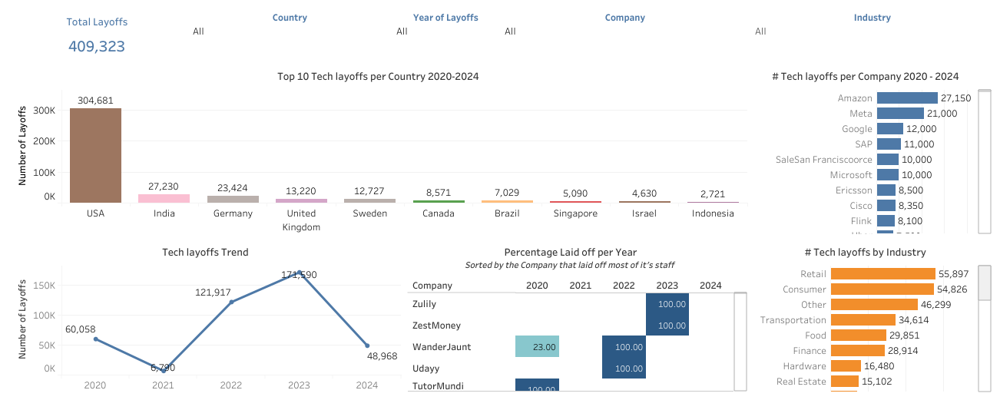

Portfolio
Here are some of my projects. Click "SEE MORE" to view on GitHub. Find more projects on Kaggle linked to GitHub.

Retail Sales EDA in Python
Explored customer behavior, product performance, and seasonal trends using Python. Delivered insights and recommendations to optimize marketing, inventory, and pricing strategies.
SEE MORETelco Churn Predictive Analysis
Identified churn risk, revenue exposure, and retention leverage in Telco customers. Built for fast, strategic action.
SEE MORE

Tech Layoffs 2020–2024
Analyzed global tech layoffs using SQL and Tableau to uncover trends across companies, industries, and countries. Delivered insights and strategic recommendations for job seekers, investors, and policy makers
SEE MORE